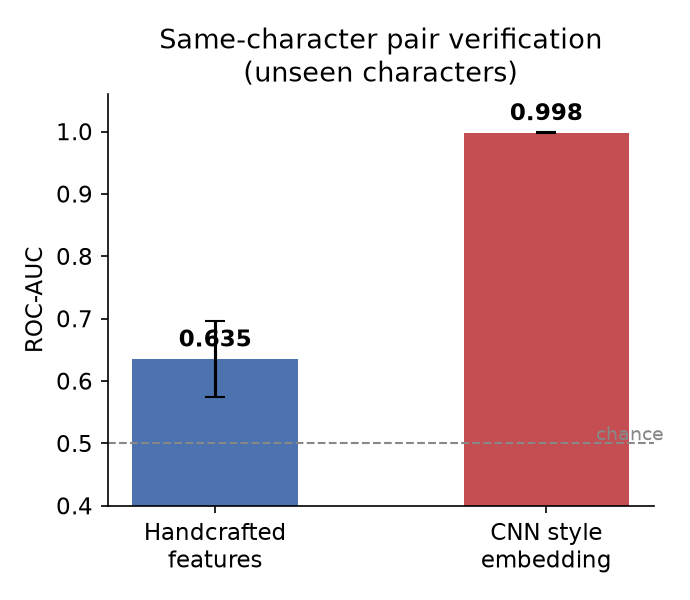
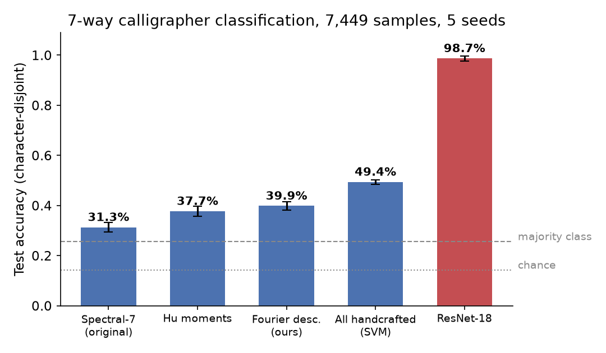
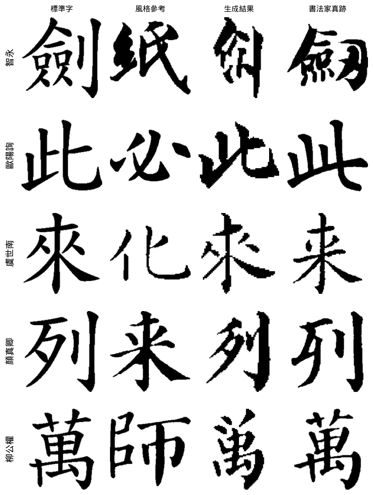

以前 n 個傅立葉諧波重建顏真卿的「敬」——n = 4 時字已可辨，n = 16 後補回的只是筆鋒。
字的身份，住在最前面的幾個頻率裡。本研究把這句話變成可量化、可檢驗、可應用的科學。
我練書法十年。臨帖時有兩個一直沒有答案的問題：老師說「你的字缺了顏體的厚重」—— 「厚重」到底是什麼？量得出來嗎？ 還有，想練某個字時，常發現那位書法家根本沒寫過它—— 缺的字，補得出來嗎？ 這個專案是我用資訊工程的方法，回答自己這兩個問題的完整過程： 從自建資料集、可解釋分析、嚴格的泛化實驗，到頻率導引的風格生成。
公開書法資料集是一張圖一個標籤。我們的資料多了一層結構：每個字連結到所有寫過它的書法家—— 這讓我們能把「字形內容」變因徹底控制掉，只留「風格」。所有實驗採 character-disjoint 切分： 測試的字在訓練時從未出現，模型只能學風格、不能背字。

把字圖低通濾波到只剩 10% 空間頻率——只有粗略佈局、沒有任何筆鋒細節——重新訓練的 CNN 仍以 95% 準確率認出書法家。書論「結構為本、筆法為末」，第一次有了數字。 這與開頭的傅立葉重建圖互為印證：眼睛看到的，量化也成立。
10% 頻寬 → 94.7%

同字配對驗證：給兩張同一個字，判斷是否同一人寫。在完全沒看過的字上 AUC 0.998； 把正例限制在「不同字帖」仍有 0.989——模型學到的是風格本身，不是在認字帖。 這種 text-dependent 設計，單張標籤的公開資料集做不到。
AUC 0.989正規化輪廓傅立葉描述子＋Hu 矩＋頻譜統計，合計 49.4%（多數類 25.7%、ResNet-18 98.7%）， 且訊號分散於整個諧波頻譜、無低頻捷徑。「可解釋」與「高準確率」之間的差距不是失敗—— 它本身就是研究對象。
49.4% ↔ 98.7%

在獨立蒐集的 40,152 張外部資料上，準確率塌縮到 32%；把兩邊都骨架化、固定寬度重繪後部分恢復 （顏真卿 16%→75%）。我們沒有把 98.7% 掛在門口——我們自己設計混淆檢查（字帖簽名、留一字帖、AUC 拆解） 找出它灌水的部分，並量化差距的確切來源。
32% → 42%進行中——發現 1 的直接應用：風格住在低頻，生成就該明確監督低頻結構。
用 diffusion 字體生成（FontDiffuser）在本資料集上微調，並加入頻域結構損失作為我們的方法。 評估用的是本資料集獨有的武器：同字真跡 ground truth——生成「這位書法家沒寫過的字」之後， 直接跟他真的寫過的字比。一般字體生成研究沒有這種對照可用。

| 設定（凍結評估器，真跡上限 91.9%） | Style match ↑ | SSIM ↑ |
|---|---|---|
| FontDiffuser zero-shot | 20.0% | 0.531 |
| ＋本資料集 fine-tune（15k 步） | 32.4% | 0.556 |
| ＋guidance 調校＋驗證導引重排（K=5） | 34.3% | 0.557 |
| 頻域損失（0.1／2.0 兩種劑量）、類別平衡 | 皆未突破（消融詳見報告） | |

研究不是終點。這些發現落地成一個真實部署的學習平台：上傳習字照片，得到與大師逐像素的差異疊合圖 （紅＝多寫、藍＝少寫）與結構均衡分析。而回饋的順序——結構優先、細節其次—— 正是發現 1 告訴我們的。體驗平台 →
生成研究也落地了：「求字」——輸入任一字、選一位大師，系統生成 5 個候選（各用不同參考真跡）、 由獨立的風格辨識器挑出最像的一個，並依 held-out 評估結果誠實標示每位書法家的可靠度 （虞世南／沈尹默高、智永中、唐楷諸家低——正是結構鴻溝所在）。輸入一句話則進入集字模式——效法唐代懷仁《集王聖教序》：有真跡的字用真跡、沒有的字由 AI 補上， 每個字標明來源，排成一幅可下載的作品。